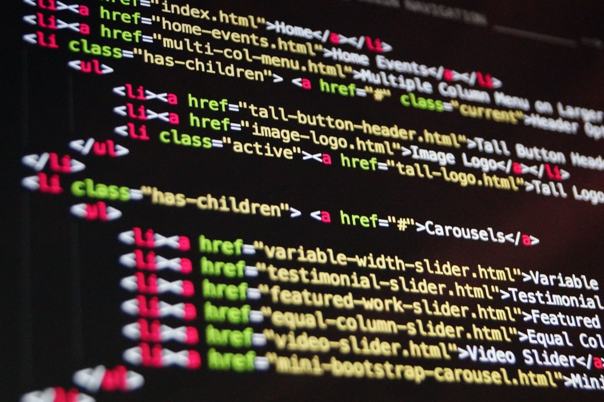

Over mij
Ik ben Mohammed Chennoufi en ik ben 18 jaar oud. Ik volg nu de opleiding Software Developer Niveau 4, op het ROC Mondriaan Locatie Tinwerf. Mijn hobbies zijn sporten, gamen, films kijken, youtube video's kijken en boeken lezen. Ik help graag mensen en ik spreek respectvol tegenover anderen. Ik heb ongeveer een jaar gewerkt in een bloemenwinkel, waarbij ik bloemen en planten heb verkocht.
Beroepsprofiel
Software Developer
Werken als programmeur betekent dat je nieuwe software ontwikkelt en bestaande software aanpast op basis van de wensen van de gebruiker. Deze software zorgt er bijvoorbeeld voor dat websites draaien, apps werken of apparaten met elkaar kunnen communiceren. Ik heb gekozen voor Software Developer omdat ik graag met computers zou willen werken en het maken van een website leuk vind. Er zijn 5 eigenschappen dat een goede programmeur bezit.
Deze eigenschappen zijn:
- Analytisch
- Goede concentratie
- Handige programmeertalen kennen en kunnen gebruiken (HTML,CSS,JS,BOOTSTRAP,PHP)
- Geduld
- Graag problemen willen oplossen